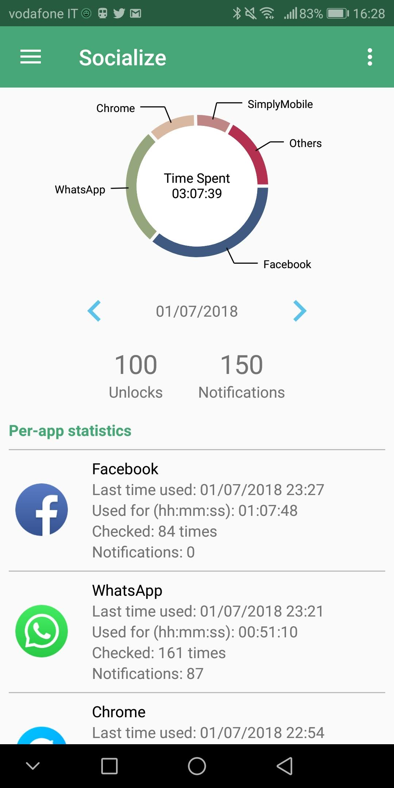
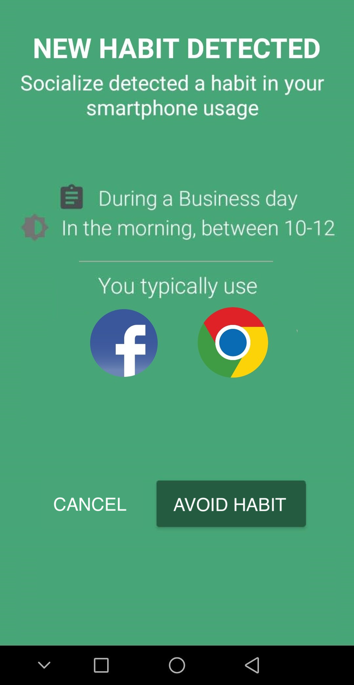

Digital Self-Control Tools
The last few years have seen the flourishing of Digital Self-Control Tools (DSCTs) both in academia and as off-the-shelf products. These tools allow users to self-regulate their technology use through interventions like timers and lock-out mechanisms. While these emerging technologies for behavior change hold great promise to support people’s digital wellbeing, we still have a limited understanding of their real effectiveness, as well as of how to best design and evaluate them. In our research, we conducted extensive reviews of contemporary DSCTs and attempted to improve their effectiveness.
DSCTs and Smartphones
Smartphones have become an integral part of our daily lives. Through smartphones, users can nowadays perform many different tasks such as browsing the web, reading emails, and using social networks. As smartphone use increases dramatically, however, so do studies about the negative impact of overusing technology. Smartphones, in particular, have been found to be a source of distraction, and their excessive use can be a problem for mental health and social interaction. Many different mobile apps for breaking "smartphone addiction" and achieving "digital wellbeing" are available. However, it is still not clear whether and how such solutions work. Which functionality do they have? Are they effective and appreciated? Do they have a relevant impact on users' behavior? Can we do better?

In our research, we conducted a functionality review of the 42 most popular digital wellbeing apps available in the Google Play Store, by highlighting which features are more common, and how such apps support a more conscious use of technology. Then, we extracted 1,128 reviews left by users for these 42 apps, and we conducted a thematic analysis to gain insight about the users’ experience with digital wellbeing apps and their features. Finally, we designed and implemented Socialize, our own digital wellbeing app, by integrating the most common digital wellbeing features extracted during our functionality review. We conducted a three-week in-the wild study of Socialize with 38 participants. Our aim was to gain a quantitative insight into the findings stemming from the first 2 qualitative studies, thus assessing whether the features that contemporary digital wellbeing solutions share are effective for changing behavior and promoting a more conscious use of the smartphone.
These are the most interesting results extracted from the studies:
-
Contemporary digital wellbeing apps are mainly focused on supporting self-monitoring, i.e., tracking user’s behavior and receiving feedback, but are not grounded in habit formation nor social support literature. Habit formation, in particular, could play an important role in digital wellbeing apps, supporting behavior change towards a more conscious use of technology, and ensuring the long-term effects of the new behavior.
-
Contemporary digital wellbeing apps are liked by users and useful for some specific use cases, but they are not sufficient for effectively changing users’ behavior with smartphones. By using self-monitoring functionality, in particular, such apps are effective for temporary breaking some unhealthy behaviors, e.g., the excessive use of social networks, but they fail in other circumstances. For example, by offering functionality that can be easily bypassed, they do not prevent users from constantly checking their devices.
-
Promising areas to go beyond self monitoring techniques include the design of digital wellbeing apps that support the formation of new habits and promote self regulation through social support
The source code of Socialize is freely available on GitLab. If you are interested, you can also download the collected data and the resulting codebooks:
The research was published in a full paper at CHI ‘19. Watch the video of the presentation!
DSCTs in the Computing Literature
We further consolidated our findings on smartphones’ DSCTs by conducting a systematic literature review and a meta-analysis of current work on tools for digital self-control. Our analysis was published on the ACM Trasactions on Computer-Human Interaction, and surfaced motivations, strategies, design choices, and challenges that characterize the design, development, and evaluation of DSCTs.
Overall, we found several gaps in contemporary DSCTs that may inform future works in this field:
- Self-monitoring nature: through contemporary DSCTs, people need to figure out for themselves the causes of their problems and possible solutions.
- Short-term effectiveness: contemporary DSCTs are not effective in the long term, as they do not promote the formation of new habits.
- Focus on (single-device) screen-time: reducing screen time, only, is not the right way to support people’s digital wellbeing.
- Theoretical gap: DSCTs and the digital wellbeing research area are not sufficiently grounded in HCI and behavioral theories.
Furthermore, our analysis also shows these gaps regarding the evaluation of DSCTs:
- Experiments are typically short (e.g., 21 days) and cannot assess the long-term effects of using a DSCT.
- Experiments rarely include a control group, with a prevalence of within-subject experiments.
- Experiments rarely include a withdrawal phase, i.e., a phase during which the DSCT is (progressively) removed.
- Experiments have a strong selection bias towards young university students, and, more generally, towards technology-savvy users that use devices like PCs and laptops every day, e.g., for studying or working.
Towards Positive Smartphone Habits

To better assist users in personalizing their behavior with the smartphone, we started to analyze smartphone usage under the lens of habits. We first designed and implemented a data analytic methodlogy based on association rules mining to extract habits from smartphone usage data. By assessing the methodology over a dataset containing more than 130,000 phone usage sessions collected in-the-wild, we showed evidence that smartphone use can be characterized by different types of complex links between contextual situations and usage sessions, that are highly diversified across users. We therefore applied the data analytic methodlogy in a habit-forming version of our Socialize app. The new version makes use of implementation intentions and just-in-time reminders to assist users in replacing existing (and unwanted) smartphone habits, e.g., browsing Facebook at work, with new and desirable habits that do not involve the usage of the mobile device. Besides reducing the time spent on the mobile apps that are habitually checked, the new version of Socialize helps users reduce their overall smartphone use in a given context. An in-the-wild evaluation with 20 smartphone users (age 19-31) shows evidence that the app can effectively assist users in better controlling their smartphone use, with just-in-time reminders that can significantly reduce the impact of unwanted smartphone habits.
The research was published in the ACM Transactions on Interactive Intelligent Systems and was presented at the IUI '22 conference. Watch the video of the presentation!
References
- The Race Towards Digital Wellbeing: Issues and Opportunities, Alberto Monge Roffarello and Luigi De Russis, Proceedings of the 2019 CHI Conference on Human Factors in Computing Systems (CHI ‘19) [pdf]
- Towards Detecting and Mitigating Smartphone Habits, Alberto Monge Roffarello and Luigi De Russis, Proceedings of the 2019 ACM International Joint Conference and 2019 International Symposium on Pervasive and Ubiquitous Computing and Wearable Computers (UbiComp 2019) [pdf]
- Understanding, Discovering, and Mitigating Habitual Smartphone Use in Young Adults, Alberto Monge Roffarello, and Luigi De Russis, ACM Transactions on Interactive Intelligent Systems (TiiS) [pdf]
- Achieving Digital Wellbeing Through Digital Self-Control Tools: A Systematic Review and Meta-Analysis
Alberto Monge Roffarello and Luigi De Russis, Transactions on Computer-Himan Interaction (TOCHI)
[pdf]